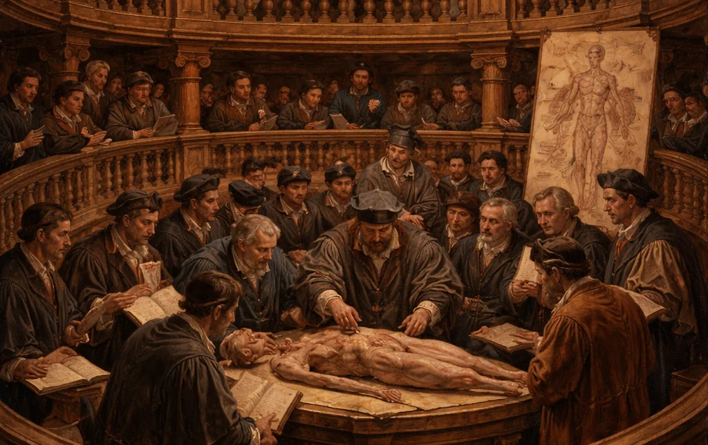

Insegnamenti

- Dal 2022Chirurgia Vascolare
Corso di laurea in Medicina e Chirurgia, Università di Padova.
- Dal 2023Vascular Diagnostics
Corso di laurea in lingua inglese Medicine and Surgery, Università di Padova.
- Dal 2021Scuola di Specializzazione in Chirurgia Vascolare
Formazione clinica e chirurgica dei medici specializzandi e tutoraggio clinico, Università di Padova.
- 2023Master di II livello in Medicina Vascolare e Malattie Trombotiche-Emorragiche
Insegnamento di Chirurgia Vascolare, Università di Padova.
- 2023-2024Master in Gestione delle lesioni cutanee e delle ferite difficili (wound care)
Insegnamento sulle ulcere flebostatiche e sul trattamento chirurgico delle ulcere arteriose, Università di Padova.
- 2025-2026Anatomia e Istologia
Corso di laurea in Scienze Infermieristiche, Università di Padova, sede di Treviso.
Sono tutor clinico degli studenti del corso di laurea in Medicina e Chirurgia e membro del consiglio di corso di laurea in Medicine and Surgery.